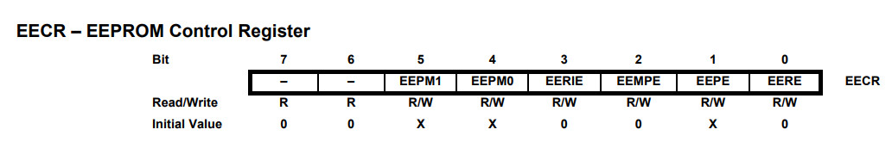
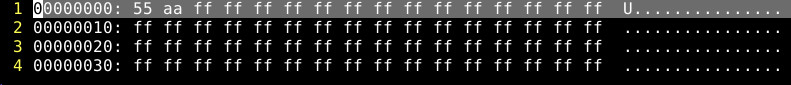

參考資訊：
https://www.microchip.com/en-us/product/attiny13#Documentation
https://nerdathome.blogspot.com/2008/04/avr-as-usage-tutorial.html
在寫入EEPROM之前EEMPE必須先設定，接著才能開始寫入數據

.equ EEARL, 0x1e
.equ EEDR, 0x1d
.equ EECR, 0x1c
.org 0x0000
rjmp main
.org 0x0020
main:
ldi r16, 0x55
ldi r17, 0x00
rcall eeprom_write
ldi r16, 0xaa
ldi r17, 0x01
rcall eeprom_write
loop:
rjmp loop
eeprom_write:
sbic EECR, 1
rjmp eeprom_write
out EEARL, r17
out EEDR, r16
sbi EECR, 2
sbi EECR, 1
ret
eeprom_read:
sbic EECR, 1
rjmp eeprom_read
out EEARL, r17
sbi EECR, 0
in r16, EEDR
ret
編譯和燒錄
$ avr-as -mmcu=attiny13 -o main.o main.s $ avr-ld -o main.elf main.o $ avr-objcopy --output-target=ihex main.elf main.ihex $ sudo avrdude -c usbasp -p t13 -B 1024 -U flash:w:main.ihex:i
接著讀取Flash
$ sudo avrdude -c usbasp -p t13 -B 1024 -U eeprom:r:eeprom.bin:r
完成
